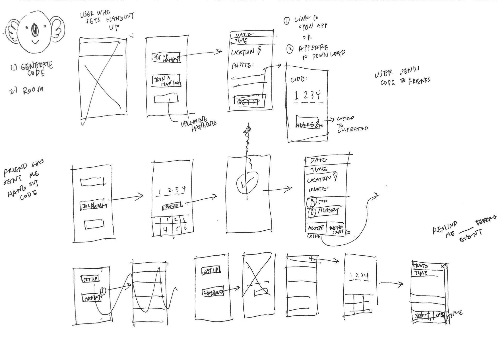
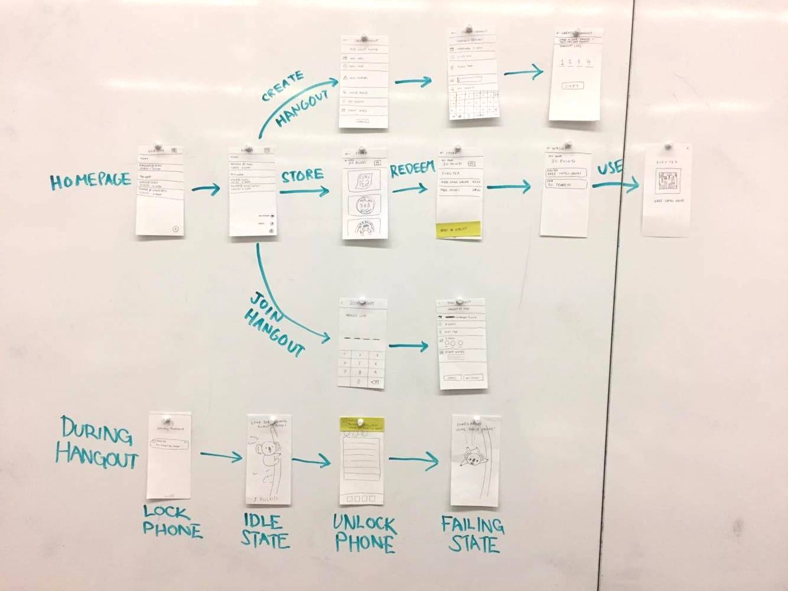
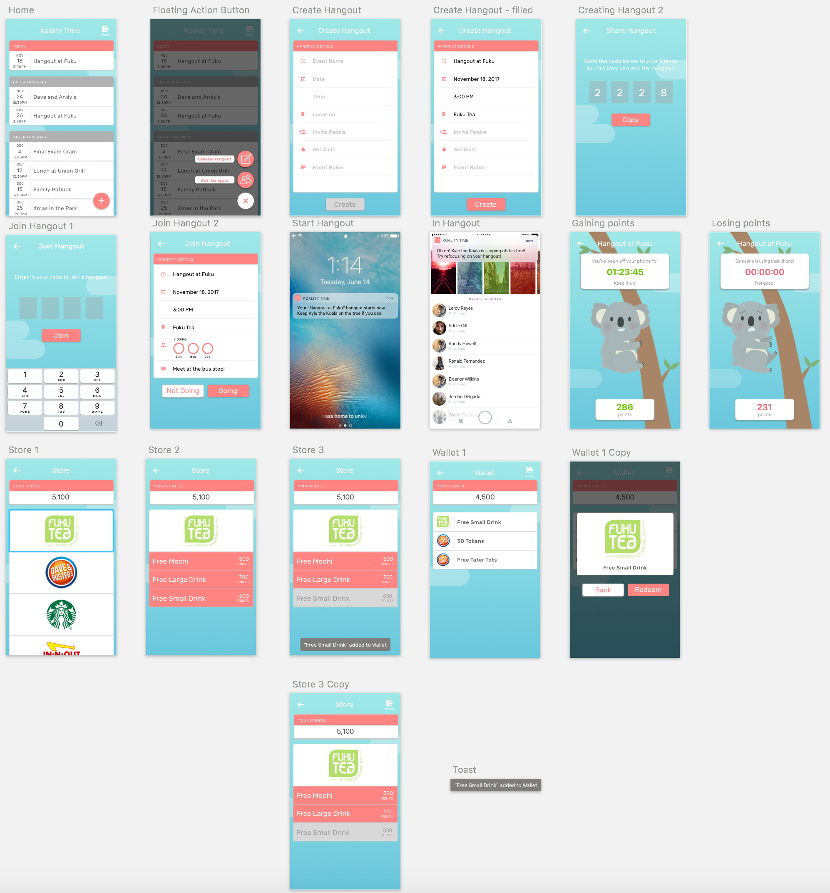
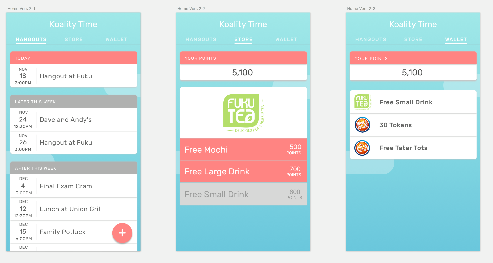
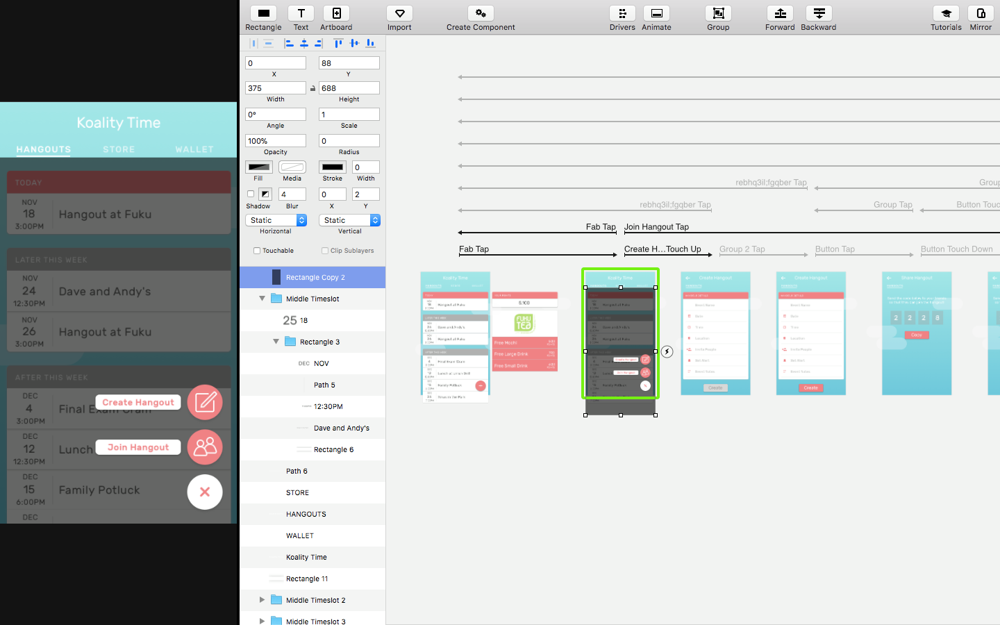

KOALITY TIME
oct–dec 2017 (THIS PROJECT IS STILL IN PROGRESS.)
overview—
persuasive design, ui/ux, mobile
tools—
Sketch, Principle
teammates—
Alex Yeh, Albert Yang, Christie Chong
introduction—
Research has shown that phone use during social gatherings lowers the quality of social interaction and conversation. “Koality Time” is a mobile application that seeks to solve this problem by reducing phone use during hangouts. Users are incentivized with points that are earned during phone-less hangouts that can be redeemed in other social hangout locations.
ideation—
We landed on the problem space of wanting to improve social interactions by removing phone use pretty early on, but we also wanted to explore different ways of intervening. Each of member of our team listed out ten different ideas that would speak to solving this issue. Through the process of elimination, narrowed down to two of the ideas that seemed the most fitting for our goals and time frame.
Brainstormed ideas
- Longer people don’t use their phone the more they get a ______
- People get coupon after hangout
- People get to donate something after hangout
- Start people off with coupons, later when they’re hooked ask if they would be interested donating instead
- Combat “conversational narcissism” by taking in a person’s info (harmless) and outputting it to the person they’re hanging out with using hypothetical questions (“What has John been up to recently?”)
- Create a mobile application that promotes spending better quality time with friends by using bets. Within a friend group, every individual places a bet of any amount. The first person to touch and start using their phone loses the bet and the money he placed down. The remaining money is split between the rest of the participants.
Final idea
From looking at other precedents, research, and receiving additional feedback from our peers, we decided to continue with the first idea. Users would receive points from not using their phones which they can later redeem.
research—
Please view the literature review slides here.
proof of concept—
We conducted a series of studies to evaluate the effectiveness of our idea. To do this, we observed the behavior of friends in groups and presented them with a scenario similar to our concept. Our subjects were told to stay off their phones during the duration of the hangout. If they were successfully able to do so, then they would be rewarded with some incentive of their choice. In this case, participants were offered a free bubble tea drink if they successfully completed the hangout. Out of our 6 participants, 4 were successful. The two that did not complete the challenge forgot about the challenge and checked their phones out of habit.
Takeaway
Incentives like free bubble tea kept participants motivated to not check their phones
Having the reward dependant on another participant kept the participants accountable.
storyboarding & userflow—
After solidifying our concept, we started to storyboard out exactly what features of the app would be necessary. We looked at apps with similar goals like “Pocket Points” as references to how the user experience was designed.

We then created paper wireframes and drew out the possible user paths.

user testing: paper prototypes—
Method
Asked 5 participants to talk aloud their thought process and reactions while:
- Create Hangout
- Join Hangout
- Spend Points
- Redeem Coupon
Feedback
- Generally easy to use and understand
- Awkward interaction with wallet and stores
- Confusion on how to get to wallet
user testing: mid-fidelity prototypes—
Similar to the first user test, we asked our 4 participants to walk through tasks while talking aloud.
- Create Hangout
- Join Hangout
- Spend Points
- Redeem Coupon

Feedback
- Did not notice Wallet icon on home screen
- Got confused if they were in the Store or Wallet screen
- Did not know how to spend points
Changes Made
- Separating Wallet and Store (Store used to be inside Wallet)
- Tabs on top that allow users to swipe between Hangouts, Store, and Wallet

prototyping—
We are currently building out our application using Principle, a prototyping tool that allows for in context testing (on the phone) with animated transitions. As we finish the project, this page with updated with more information and details.
